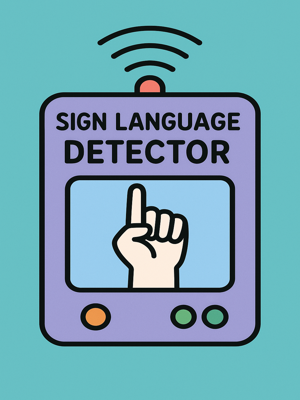
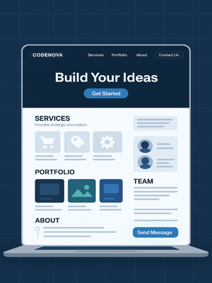
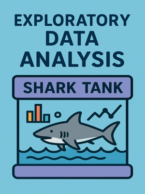
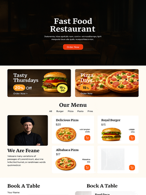
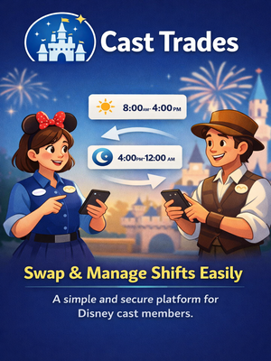

Python
Automatizacion, analisis y prototipos
Lo uso para scripts, transformacion de datos, prototipos de IA y tareas donde necesito rapidez de iteracion.
Pandas, notebooks, automatizacion, machine learning
Soy Esteban. Desarrollo interfaces web, automatizaciones y soluciones apoyadas en datos para convertir ideas y procesos en productos claros, utiles y mantenibles.
Haz hover o click para actualizar el panel.
Automatizacion, analisis y prototipos
Lo uso para scripts, transformacion de datos, prototipos de IA y tareas donde necesito rapidez de iteracion.
Mi experiencia combina operacion, sistemas y mejora de procesos. Eso hace que el desarrollo no se quede en lo visual: apunto a soluciones que tambien funcionen bien detras.
Ordenamiento y digitalizacion de documentos contables, trabajo con Excel y Power BI, y desarrollo voluntario de un aplicativo interno en Java con MySQL.
Limpieza y transformacion de datos para migracion a SAP Business One con scripts en Python, junto con apoyo en frontend para una futura migracion desde Shopify.
Experiencia fuerte en atencion al cliente y deteccion de fricciones operativas que luego inspire el prototipo Cast Trades para intercambio de turnos.
Cada proyecto aporta una capa distinta del perfil: vision de producto, manejo de datos, algoritmos o implementacion web completa.

Modelo para reconocer gestos a partir de imagenes clasificadas y explorar IA aplicada a vision por computadora.
Ver repositorio
Sitio dinamico con enfoque corporativo, gestion de contenido y estructura web responsive.
Ver repositorio
Analisis exploratorio enfocado en patrones de inversion, sectores y factores asociados a acuerdos exitosos.
Ver repositorioSimulacion para optimizar recursos con enfoque algoritmico sobre demanda horaria en horas punta.
Ver repositorio
Sistema web para pizzeria con carrito, autenticacion y flujo de compra armado de punta a punta.
Ver repositorio
Propuesta digital para ordenar el intercambio de turnos con una experiencia mas clara y estructurada.
Ver repositorio